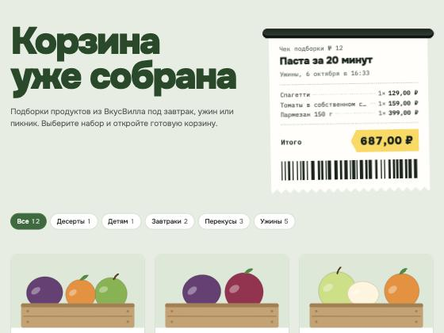

Проект — VkusVill Collections: публичный дашборд подборок продуктов и CRUD API (FastAPI + SQLite). Агент собирает подборку через MCP ВкусВилла и сохраняет её в сервис только после явного «да» оператора.
evidence/agent-*.txt.collection-approval, потому что 5 октября у ключа VseLLM кончился бюджет (HTTP 402).Каждое подключение показано в работе, а не только в конфиге.
| Что | Где | Применение (подтверждение) |
|---|---|---|
| AGENTS.md | vkusvill-collections/AGENTS.md | Агент сам нашёл контракт, тест-пример, ограничения фичи A и команду sh scripts/check.sh — лог 2.1. Style guide связан с AGENTS.md; агент назвал правило 3 и точные строки кода, плюс заранее указал, где фича B его нарушит — лог 4.1. |
| Skill | .opencode/skills/ | Агент вызвал Skill "test-driven-development" и прочитал writing-good-tests.md (лог 2.3), затем по нему сделал A: сначала 2 падающих теста (201/200 вместо 409), потом исправление — лог 3. |
| MCP | opencode.json → context7, collections | Реальные context7_resolve-library-id и два context7_query-docs вернули документацию FastAPI про 409 и exception handler — лог 2.5. Этот же приём (один handler) агент применил в A. opencode mcp list: оба сервера connected. |
| Hook | .opencode/plugins/check-after-edit.js | После каждой правки агента запускается check.sh, результат дописывается в ответ инструмента. Временный тест: write → FAIL (exit 1), edit → PASS (exit 0) — лог 4.2, журнал событий. |
| Подключение | Зачем именно этому проекту |
|---|---|
| Context7 | FastAPI и Pydantic быстро меняют API (в проекте Python 3.14, Pydantic 2). Ответы «по памяти» модели устаревают; Context7 даёт доку нужной версии. Для задач без библиотек не нужен. |
| collections (свой) | Единственный канал записи в сервис для агента. Проверка «одобрено оператором» и понятные ошибки сидят в инструменте, а не в надежде на промпт. |
| test-driven-development | У сервиса есть контракт; падающий тест — доказательство, что агент понял требование, а не просто «написал код». |
| frontend-design | Дашборд публичный. Skill задал процесс: план токенов → проверка на шаблонность → самокритика по скриншоту. |
| webapp-testing | Подключён для проверки дашборда в браузере. Не запускался: Playwright не установлен, проверку UI сделал через встроенный браузер. Честно: пока лишний. |
| Hook | Агенты пишут «тесты прошли», не запуская их. Hook превращает это в факт после каждой правки и не даёт агенту не заметить FAIL. |
| tester (субагент) | Ревью отдельным исполнителем без прав на запись: только check.sh, pytest и git diff -- .. |
| Не подключал | MCP ВкусВилла — нет доступа (у ведущего это локальный адаптер с OAuth). GitHub/Playwright MCP — задачам практики не нужны; число подключений баллов не добавляет. |
collection-approval 2 баллаКлючевой сценарий из ТЗ — «агент сохраняет подборку только после явного апрува» — оформлен как процедура из 5 шагов с жёсткими правилами: одно «да» — одна подборка; правка обнуляет одобрение; данные не «чинятся» ради валидации. Файлы: SKILL.md, scripts/preview.py, examples/dinner.json.
preview.py переиспользует модели сервиса (app/models.py) — валидация ровно та же, что у API, без копии правил. Он проверяет дубликат по живому API и печатает чек для оператора. Коды выхода управляют следующим шагом: 0 — спросить оператора, 1 — невалидно, не показывать, 2 — уже сохранена. Покрыт 4 тестами (tests/test_skill_preview.py).
Полный проход на живом сервисе — evidence/skill-run.txt:
$ preview.py data/pending/pasta.json Подборка: Паста за 20 минут Спагетти................... 1 × 129,00 ₽ = 129,00 ₽ Томаты в собственном соку.. 1 × 159,00 ₽ = 159,00 ₽ Пармезан 150 г............. 1 × 399,00 ₽ = 399,00 ₽ Итого: 687,00 ₽ Сохранить эту подборку на дашборд? Ответьте «да» или опишите правки. exit 0 # оператор ответил «да» → save_collection(operator_approved=true) → id 12 $ preview.py data/pending/pasta.json # повторно Эта корзина уже сохранена: подборка №12 «Паста за 20 минут». exit 2
Испорченные данные (отрицательная цена, ссылка без https) — exit 1 с путями полей, до оператора не доходят. Первый запуск при выключенном сервисе дал предупреждение «не удалось проверить дубликаты» — сценарий из SKILL.md отработал как задуман.

collections 2 баллаmcp_server/server.py (MCP Python SDK 2.3, stdio). save_collection сохраняет подборку в сервис через его HTTP API — API остаётся единственным местом валидации. Без operator_approved=true отказывает сам. Ошибки HTTP переводит в понятные агенту сообщения: 409, 422 (с путями полей), 503, недоступность и таймаут. Второй tool, list_collections, — проверка уже сохранённого.
Реальные вызовы по stdio в отдельном процессе — так же, как запускает OpenCode — против живого сервиса: evidence/mcp-stdio-calls.txt.
| Вызов | Результат |
|---|---|
| одобренная, валидная | is_error: false → {"id": 1, "total_price": 288.0, …} |
| та же корзина повторно | is_error: true — collection with this cart_url already exists |
| ошибочный вход | is_error: true — cart_url: … must be an https link on vkusvill.ru; products.0.price: … ≥ 0 |
| без одобрения | is_error: true — the operator has not approved this collection; в сервис запрос не ушёл |
| сервис выключен | is_error: true — not reachable at …, подсказка как запустить; без traceback |
Плюс 7 тестов через настоящий MCP-протокол (in-process клиент SDK) — tests/test_mcp_server.py. Все проверки проекта: sh scripts/check.sh → 63 passed.
reflection.md — конкретные наблюдения: где агент помог, где ошибся и где пришлось вмешаться.
git diff по всему репозиторию и вывел API-ключ из корневого opencode.json — хотя AGENTS.md запрещал его читать. Запрет на чтение файла не покрывает команду, которая его покажет. Ключ вычищен из логов, правило и права tester сужены до git diff -- ..